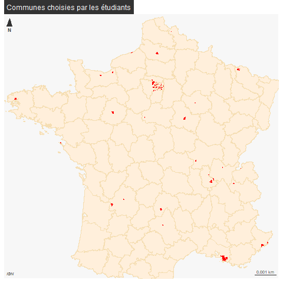
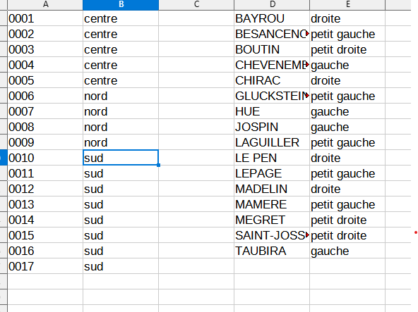
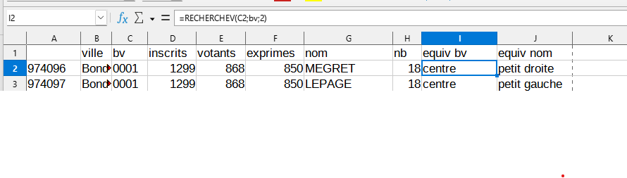
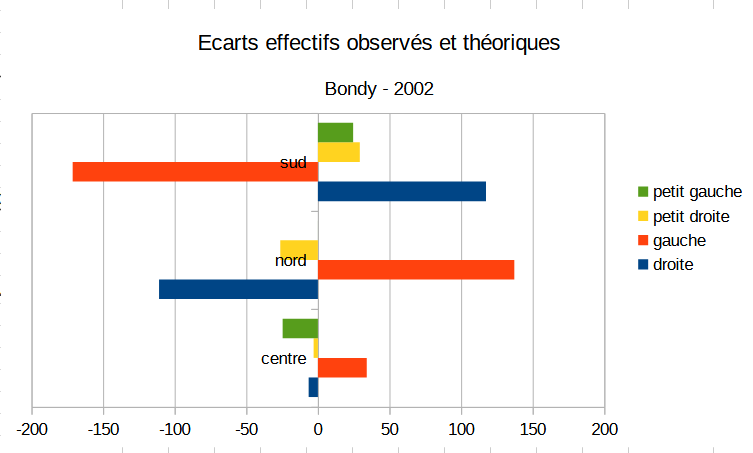
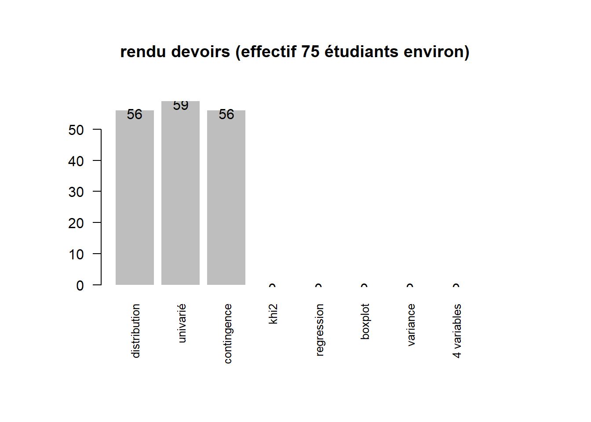
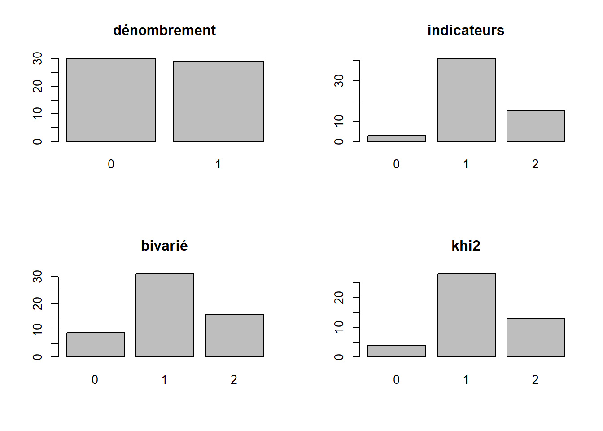

Introduction
1 Intitulé et déroulé du cours
“L5GEABIM Analyses bivariées et multivariées”
data <- read.csv("data/presentation.csv", encoding = "UTF-8", header = F)
knitr::kable(data, col.names = c("groupe", "heures", "enseignant") )| groupe | heures | enseignant |
|---|---|---|
| Gr. 1 | 8h - 9h30 | Béatrice MARANGET |
| Gr. 2 | 9h30 - 11h | Béatrice MARANGET |
| Gr. 3 | 14h - 15h30 | Béatrice MARANGET |
| Num.cours | date | thème | outil | exercice..nb.pts. |
|---|---|---|---|---|
| 1 | 18/09/23 | statistique univariée : base | tableur | 1 |
| 2 | 25/09/23 | statistique univariée : indicateurs | 2 | |
| 3 | 02/10/23 | bivariée : base + contingence | 2 | |
| 4 | 09/10/23 | Khi 2 | 2 | |
| 5 | 16/10/23 | régression | 2 | |
| 6 | 23/10/23 | devoir sur table | NA | |
| NA | 30/10/23 | CONGES | NA | |
| 7 | 06/11/23 | initiation R | R | 1 |
| 8 | 13/11/23 | initiation R / boite à moustaches | NA | |
| 9 | 20/11/23 | initiation R / variance | NA | |
| 10 | 27/11/23 | multivariée : choix des variables + + sujet DM | NA | |
| 11 | 04/12/23 | multivariée : analyse factorielle et classification | NA | |
| 12 | 11/12/23 | questions autour du devoir maison. Devoir à rendre le 13 au plus tard. | NA | |
| 13 | 18/12/23 | rendu du devoir maison et bilan formation | NA |
2 La donnée
2.1 Où les trouver ?
Au départ les données sur les élections disponibles
https://www.data.gouv.fr/fr/pages/donnees-des-elections/
intérêt de la maille du bureau de vote
Chercher REU au niveau de la zone de recherche de data.gouv, quelles perspectives pour les chercheurs ?
2.2 Préparer les données
On utilise pour le cours le fichier par bureau de vote des présidentielles 2022
Cet exercice permet d’utiliser dans le tableur :
- l’ouverture d’un fichier txt pour le transformer en csv
- la suppression de colonne
- les 3 raccourcis clavier : CTRL + * , CTRL + C, CTRL + V
- Touche de sélection et de déplacement
- tri
- filtre
L’objectif est que chaque étudiant choisisse une ville (avec au moins 5 bureaux de vote)
Pour 2022, on rajoute les étiquettes des colonnes manquantes
# 2022
data2022 <- read.csv("data/gros/resultats-par-niveau-burvot-t1-france-entiere.csv", fileEncoding = "UTF-8", header = T)
bondy2022 <- data2022 [ data2022$Libellé.de.la.commune == "Bondy",]
str(bondy2022)
write.csv(bondy2022, "data/bondy2022.csv", fileEncoding = "UTF-8")
# 2002
data2002 <- read.csv2("data/gros/PR02_BVot_T1T2.csv", fileEncoding= "Latin1",header=F,skip=18)
str(data2002)
data2002 <- data2002 [, c(4,5,6:8,10,13)]
var <- c("ville","bv" ,"inscrits" ,"votants", "exprimes", "nom", "nb")
names(data2002) <- var
str(data2002)
bondy2002 <- data2002 [ data2002$ville == "Bondy",]
write.csv(bondy2002, "data/bondy2002.csv", fileEncoding = "UTF-8")2.3 Les données des étudiants
Chaque étudiant a choisi une ville pour ses données.
ville <- read.csv("data/cours2.csv", colClasses = "character")
ville <- ville [,3]
villeModif <- read.csv("data/cours3.csv", colClasses = "character")
ville <- c(ville, villeModif [,4])
# 68 villes différentes
ville <- unique(na.omit(ville))
# recodage pour le zéro
nb <- nchar(ville)
df <- data.frame(cbind(ville, nb))
df$ville [df$nb == 4 ]<- paste0("0", df$ville [df$nb == 4 ] )
df$nb <- nchar(df$ville)
table(df$nb)
df <- df [!(df$nb != 5),]
# liste des villes utilisées = 65
library(sf)
library(mapsf)
fr <- st_read("data/gros/COMMUNE_CARTO.shp")
names(df)
names(fr)
joint <- merge(fr, df, by.x = "INSEE_COM", by.y= "ville")
# pb sur 4 code insee
cp <- setdiff(df$ville, joint$INSEE_COM)
# TODO retrouver les code insee
# jointure ville code insee pour les résultats
data2022 <- read.csv("data/gros/resultats-par-niveau-burvot-t1-france-entiere.csv", fileEncoding = "UTF-8", header = T, colClasses = "character")
names(data2022)
str(data2022$Code.de.la.commune)
# transformation en données texte
data2022$INSEE_COM <-paste0(data2022$Code.du.département,data2022$Code.de.la.commune)
# 2e jointure
joint2 <- merge(joint, data2022, by = "INSEE_COM", )
# pourquoi 267 ?
length(unique(joint2$INSEE_COM))
# encore 3 en moins...
fond <- st_read("data/gros/DEPARTEMENT.shp")
png("img/communes.png")
mf_init(joint)
mf_map(fond, add = T, col = "antiquewhite1", border = "wheat")
mf_map(joint, col = "red", border = NA,add = T)
mf_layout("Communes choisies par les étudiants", credits = "IGN")
dev.off()
Des choix sur toute l’étendue du territoire de la métropole
Enregistrement des fichiers
names(joint2)
st_write(joint2 [, c(1,8,19:118)], "data/geo.gpkg", "data2022", delete_layer = T)
write.csv(joint2 [, c(1,8, 18:117), drop = T], "data/data2022.csv", fileEncoding = "UTF-8")Bureaux de vote pour chacune des communes, données texte
2.4 Recodage des variables
2.4.1 Créer des tables de référence

2.4.2 Formule rechercheV

2.4.3 Résultat sur les écarts à la moyenne 2002

3 Présentation rapide (vous êtes nombreux !)
3.1 Qui sont les étudiants ?
- 74 étudiants sur 3 cours
Les questions posées sont sur le passé / présent / futur des étudiants, leur appétence en stats et le nombre d’années depuis le dernier apprentissage.
## [1] "X"
## [2] "presence"
## [3] "prénom"
## [4] "nom"
## [5] "passé"
## [6] "présent"
## [7] "futur"
## [8] "appétence.stats..passionnément.4...pas.du.tout.1."
## [9] "dernière.année.apprentissage.stats..en.nb.années."
## [10] "groupe"names(etudiant)[8:9] <- c("appétence", "nb d'années")
png("img/quisontils.png")
par(mar = c(2,16,2,4))
par(mfrow = c(3,2))
for (i in 5:9){
par(mar = c(2,16,2,4))
barplot(sort(table(etudiant [,i])), border = NA,
horiz = T, las = 2, cex.names = 0.8,
main = names (etudiant) [i])
}
dev.off()## png
## 2
3.2 Présence et rendu des devoirs : chiffres clés
3.2.1 Effectif et cours
fic <- list.files("data/", pattern = "^cours")
fic
# on recherche le fichier le plus haut
nb <- max(as.integer(substring(fic, 6,7)))
tmp <- NULL
tab <- NULL
for (i in 1:nb) {
nomFic <- paste0("data/cours", i, ".csv")
data <- read.csv(nomFic, fileEncoding = "UTF-8")
data <- data [data [,2] == "oui",]
tmp <- table(data$groupe)
tab <- rbind(tab , tmp)
}
tab
row.names(tab) <- paste0("cours ",seq(1,nb, by = 1))
paste0("cours ",seq(1,nb, by = 1))
knitr::kable(tab)Graphique
3.2.2 Les rendus d’exercices
rendu <- c(56,59, 56, 45,0,0,0,0)
titre <- c("distribution", "univarié", "contingence", "khi2", "regression", "boxplot", "variance", "4 variables")
par(mar = c(8,6,6,6))
p <- barplot(rendu, names = titre, cex.names = 0.8, las = 2, main = "rendu devoirs (effectif 75 étudiants environ)", border = NA)
text(p, y = rendu - 1, labels = rendu )
3.2.2.1 Les notes des exercices
- Le critère externe : des points faciles ?
le nom du fichier le temps du rendu (avant la limite)
- Distribution des totaux
## [1] "dénombrement" "indicateurs" "bivarié" "khi2"# recodage : si note 2, alors note1 = 0 si NA
res$dénombrement [is.na(res$dénombrement )& !is.na(res$indicateurs)] <- 0
res$dénombrement [ is.na(res$indicateurs)] <- NA
# graphique
par(mfrow= c(2,2))
for (i in (1:length(res))){
p <-barplot(table(res[,i]), main = names(res)[i])
}
3.3 Notes finales
note <- read.csv("data/noteFin.csv", fileEncoding = "UTF-8", na.strings = "en attente", dec = ",")
summary(note$note.sur.20)
hist(note$note.sur.20, main = "Etalement note finale - 95 obs", freq = T, border = NA)
resSansZero <- note [note$note.sur.20 !=0,]
abline(v = mean(note$note.sur.20, na.rm = T), col = "red")
mean(note$note.sur.20)
hist(resSansZero$note.sur.20, main = "Etalement note finale - 73 obs", freq = T, border = NA)
abline(v = mean(resSansZero$note.sur.20, na.rm = T), col = "red", lty = 2)4 Ressources autre que la bibliographie officielle
2 cours universitaires disponibles sur internet
- http://www.ipt.univ-paris8.fr/vgodard/enseigne/statisti/framstat.htm
- http://grasland.script.univ-paris-diderot.fr/STAT98/STAT98.htm
Pour R, la base de tout est
R et espace (https://archives.framabook.org/r-et-espace/index.html)
L5GEABIM Analyses bivariées et multivariées